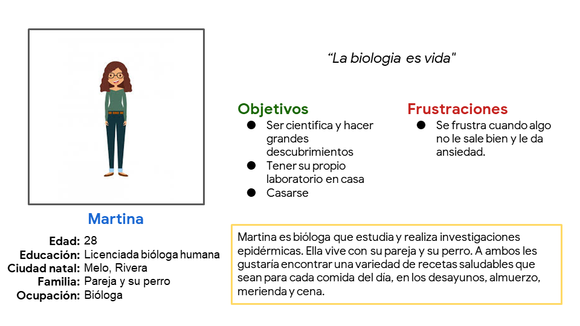
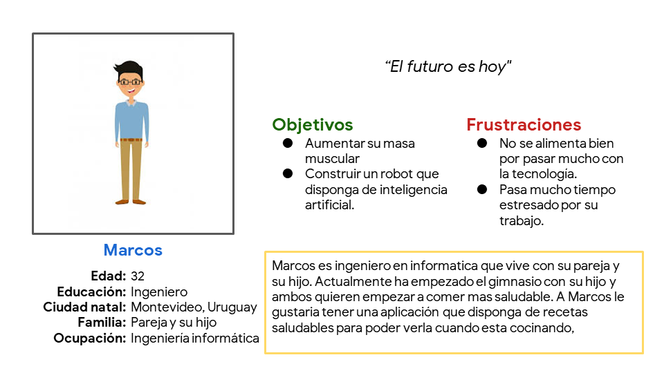

Diseño de una web y app de recetas y libros digitales

Rol y responsabilidades
Este proyecto fue elegido del curso "Diseño de experiencias del usuario UX" de Google en coursera. En estre proyecto trabaje como investigador principal UX y desarrollador. Fui jefe de interfaz de usuario, centrandome en el diseño visual creando prototipos de baja y alta fidelidad y la interaccion.
Publico objetivo: Todas aquellas personas que quisieran comer mas saludable que puedan encontrar recetas saludables y comprar libros con una gran variedad de recetas para las 4 comidas del día. Estará disponible tanto en la web como en una aplicación para móviles, abarcando todas las plataformas para todos los tipos de usuarios.
Desafio: Diseñar una web y una aplicacion que se puedan acceder a cientas de recetas saludables y libros digitales.
Objetivo:Crear una web responsive, que se adapte a todos los dispositivos y una aplicacion para que todos los usuarios tuvieran la oportunidad de llevar consigo a tan solo unos clicks todas las recetas hacia la cocina.
Investigacion
Realicé entrevistas y creé mapas de empatía para entender a los usuarios para quienes diseño, así como sus necesidades. Un grupo de usuarios primario identificado a través de la investigación fueron deportistas. Otros usuarios identificados son los que quisieran realizar dieta y comer mas saludable para sentirse mejor. Este grupo de usuarios confirmó las suposiciones iniciales, poder ver las recetas sin conexión y que puedan tenerlas a la vista a la hora de preparar la comida, pero la investigación también reveló que habían usuarios que quisieran comprar libros digitales con las recetas.
Personas entrevistadas
Para esta investigacion se han realizado 5 entrevistas en las cuales Martina y Marcos se destacan.
Martina es una bióloga que realiza investigaciones epidérmicas. Tanto a ella como a su pareja les gustaría encontrar recetas saludables para las 4 comidas del día porque quiere reducir su peso. Ademas ella quisiera que pueda tenerlas consigo en todo momento a la hora de prepararlas.
Marcos es ingeniero en informatica que vive con su mujer y su hijo, el al estar mucho tiempo con la informatica no se estaba alimentando bien por lo que empezo a ir al gimnasio con su hijo, para tener una vida mas saludable. A su vez, el busca una aplicacion que le permita tener recetas saludables y que sea de facil acceso para poder tener las recetas en cualquier momento en su cocina.
Comenzando el diseño
Esquemas de pagina

Se utilizaron estrellas para marcar los elementos de cada boceto que se usarían en los primeros esquemas de página digitales.
Esquemas de paginas digitales (Prototipo de baja fidelidad)
Estudio de facilidad de uso: Hallasgos
- Los usuarios tuvieron dificultades con el boton de volver a inicio despues de confirmar el pago
- Algunos usuarios les gustaria que pudieran valorar de alguna manera la receta
- Todos los usuarios dijeron que estaria genial que se puediera compartir la receta con los demas
Perfeccionando el diseño
Maquetas:

Esquemas de paginas digitales (Prototipo de alta fidelidad)
Accesibilidad
1
Se incorporo una fuente serif sans para que sea mas visibles para personas con poca visibilidad.
2
Se usaron íconos para facilitar la navegación.
3
Se usaron imágenes detalladas de las comidas para ayudar a todos los usuarios a comprender mejor los diseños.
Conclusiones
¿Que aprendi?
Aprendi que es importante adaptar el diseño para diferentes tipos de dispositivos y a su vez ajustar el diseño para que siga la misma jerarquia.
Proximos pasos
1
Realizar unos ajustes con respecto a como se realiza la compra de los libros digitales.
2
Realizar otra ronda de estudios de facilidad de uso para validar si las dificultades experimentadas por los usuarios se abordaron de manera efectiva.
3
Realizar más investigaciones de usuarios para identificar nuevas necesidades